01
ROBOT LEARNING
NavBot
Gazebo, ROS, PPO, behavior cloning, residual control, and generalization tests.
GazeboROSPPO
LEARNING IN PUBLIC · 2026
An experimental robotics portfolio, from navigation in Gazebo to AI-assisted world building, OpenUSD, and Isaac Sim. I document the implementation, the evidence, and what still needs work.
00 / MANIFESTO
Understanding the systems behind the tools.
I explore how robots perceive, learn, and fail; how digital worlds are built, composed, and randomized; and how AI agents can turn real-world references into assets for simulation and training.
01 / UNIVERSE MAP
Each track connects a learning record to a practical part of the system.
ROBOT LEARNING
Gazebo, ROS, PPO, behavior cloning, residual control, and generalization tests.
WORLD BUILDING
Using AI agents with Blender and Houdini to generate, organize, and validate digital environments.
SCENE INFRASTRUCTURE
From stages, prims, and layers to composition, variants, and OpenUSD certification.
SIMULATION STACK
Exploring Isaac Sim, Isaac Lab, Newton, MuJoCo, and workflows across simulators.
THE LONG ARC
Exploring domain randomization, sensor simulation, and real-world data to bridge simulation and physical robots.
02 / DEVLOG
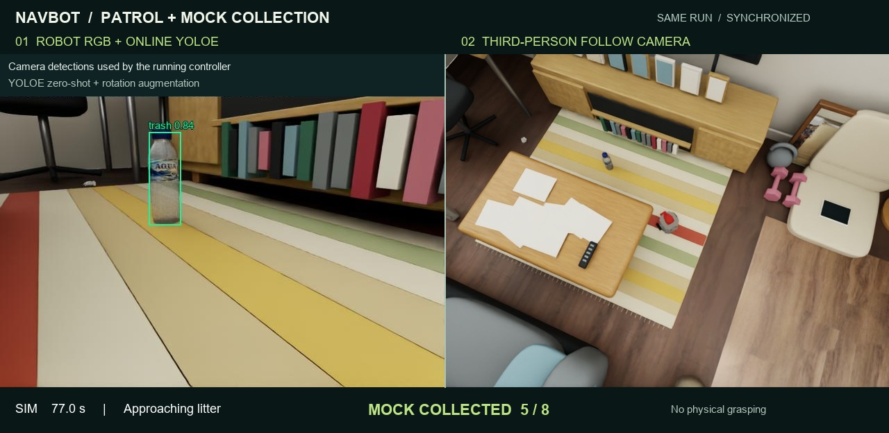
Two synchronized views of one run: robot RGB with online YOLOE detections, and an observer camera showing approach, mock pickup acknowledgement and resumed patrol.
Read the experiment →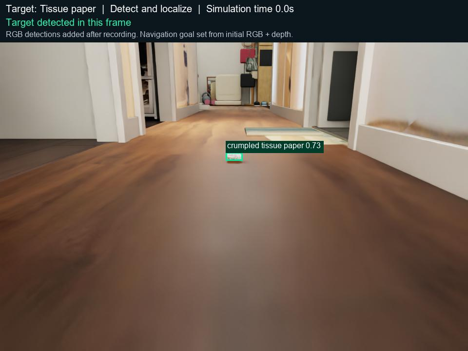
A first step toward vision-to-action: scanned references and Blender assets, RGB → YOLOE → depth localization → PPO navigation. Three separate first-person videos show successful approaches and missed detections.
Read the experiment →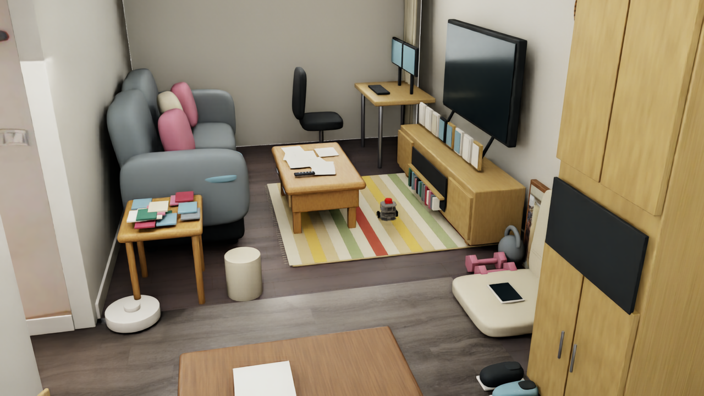
Straight-line speed tests followed by PPO + Isaac corridor runs. A turn-away failure prompted visual debugging of sensing and A* planning, then a living-room approach beneath a desk. Includes first-person footage and reports.
Read the experiment →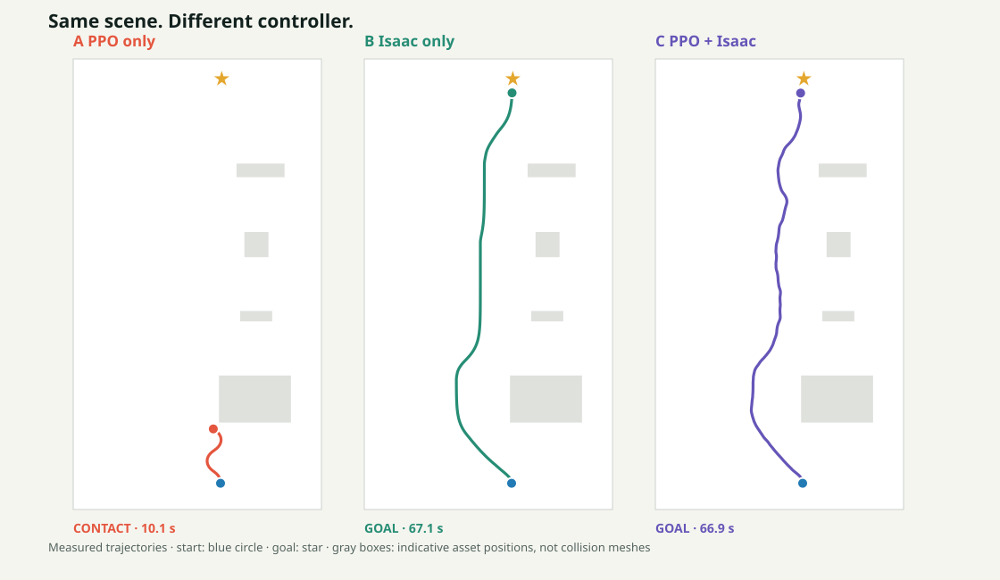
Moving from hand-written LiDAR, depth, and A* control to policy transfer. PPO-only, Isaac-only, and hybrid control are compared in the same scene: PPO executed 272 actions, but no efficiency advantage was established. Includes trajectories and data.
Read the experiment →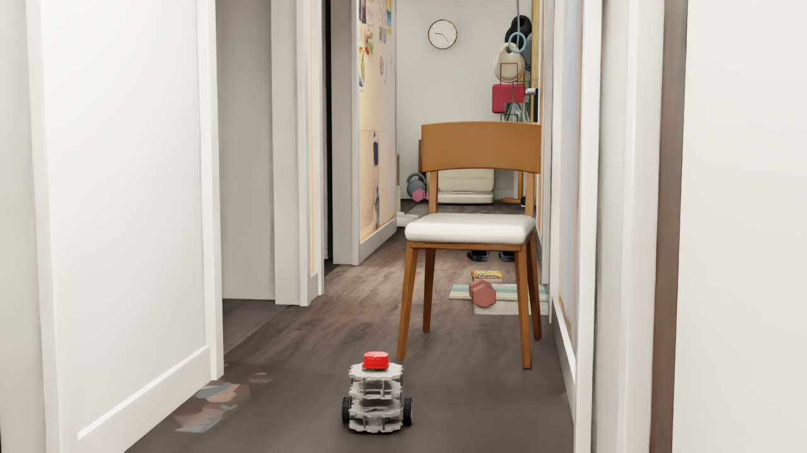
A hand-written LiDAR + depth perception and A* controller, without a trained policy. Failure trajectories exposed issues with a mat and clearance assumptions. After adjustments, 8/8 passage layouts reached the goal and 2/2 blocked controls stopped.
Read the experiment →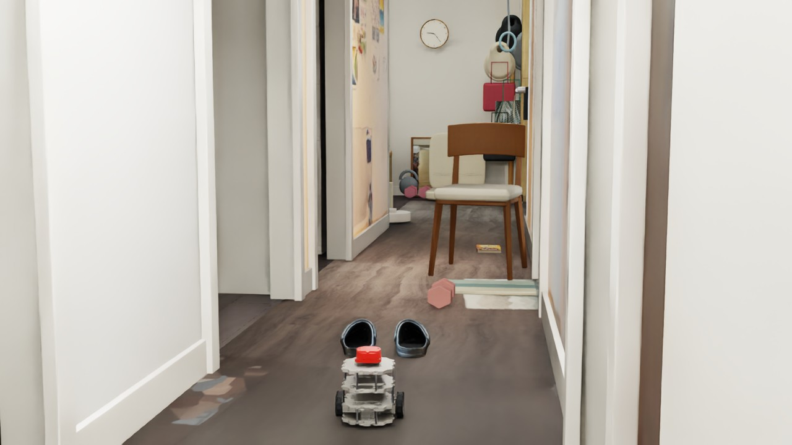
Ground filtering with a depth camera enabled a scattered-obstacle navigation run in 69.5 seconds. Includes separate pushing tests for a 188 g shoe and heavier objects, with videos and scripts.
Read the experiment →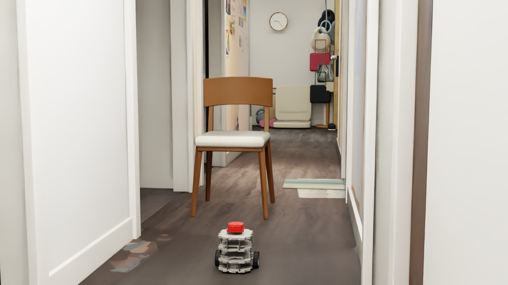
Photo-informed lighting and materials, with an overview camera recording a low-speed passage. Goal reached in 28.3 seconds; includes video, contact monitoring, and a reproduction script.
Read the experiment →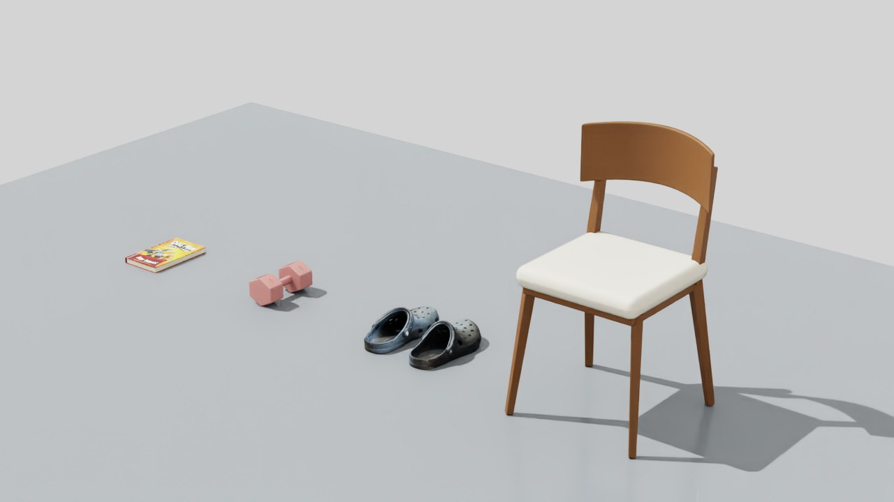
Four household assets cleaned and rebuilt in Blender, then tested in Isaac Sim. Repairs cover missing bases, floating lettering, LiDAR returns, and a shoe collision hull that initially blocked its opening.
Read the experiment →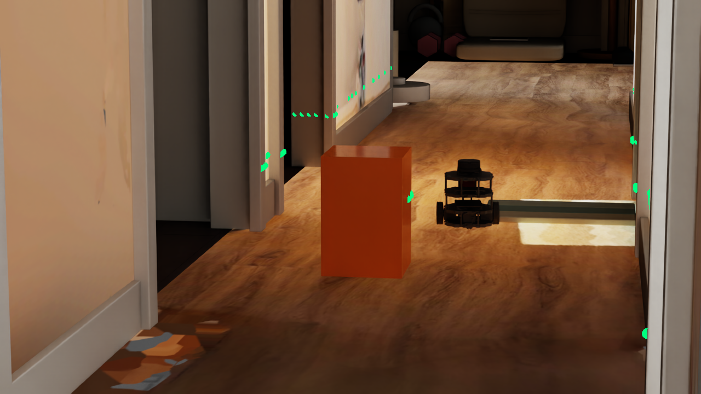
RTX LiDAR setup, scan-direction and near-range calibration, and obstacle stopping. Five layouts reached the goal; a fully blocked passage stopped safely. Includes videos, trajectories, results, and scripts.
Read the experiment →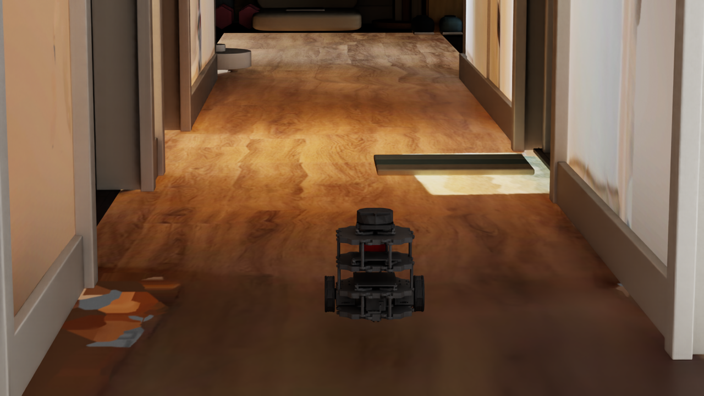
Robot import, differential-drive motion, and contact tests in a Blender-built corridor. Includes a 20-second simulation video, measurements, and debugging notes on startup crashes and timing.
Read the experiment →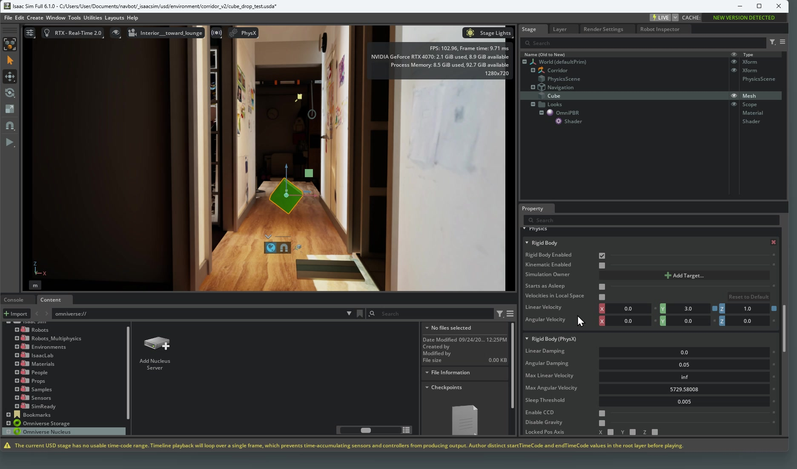
Native Windows setup, USD import, rigid-body contact, and a physics material for bounce. Two recordings document contact validation and material tuning, including an unresolved penetration issue.
View the contact test → · Physics materials and bounce →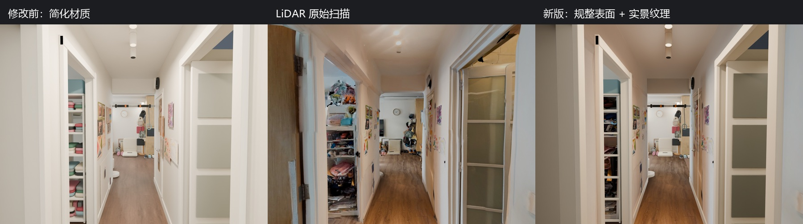
Comparing Scaniverse Gaussian splats, LiDAR meshes, and modular Blender reconstruction—from capture and plane fitting to texture recovery and simulation-readiness checks.
Read the experiment →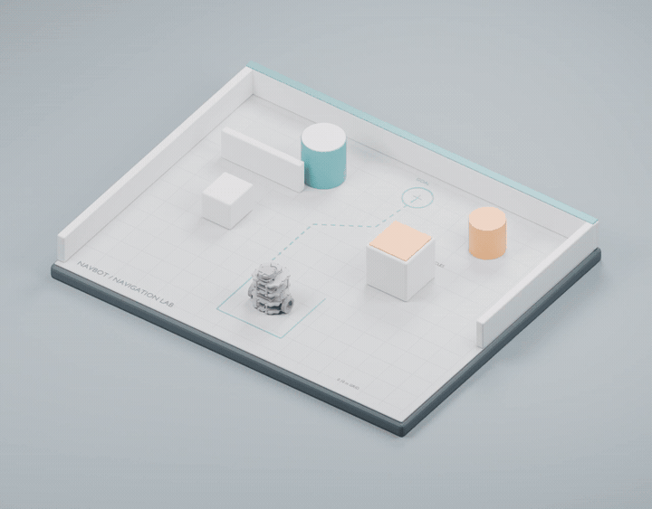
Locating the URDF in WSL, recovering a missing wheel mesh, preserving the link hierarchy, and placing the robot in a renderable navigation scene.
Read the work log ↗A minimal integration test: can natural-language instructions reliably create objects, materials, lights, and cameras?
Write-up in progressVisual meshes versus collision geometry—and how a robot can participate in physics even when part of its visible model is missing.
Write-up in progressWhat an animation render revealed about Blender, FFmpeg, file buffering, and recovery risks.
Write-up in progress03 / FIELD NOTES
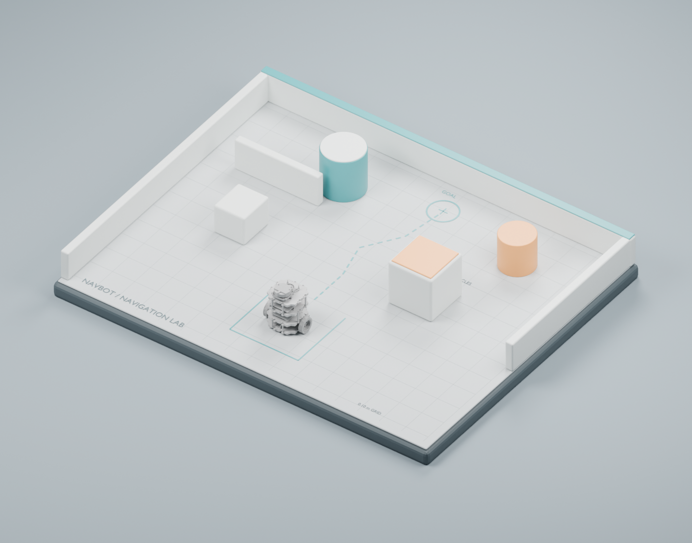
CASE STUDY 001 · ACTIVE
NavBot began as a TurtleBot3 navigation experiment. It could move toward a goal but collided with a pillar directly in its path. That failure led to experiments with residual PPO, control gating, reward shaping, behavior cloning, and generalization.
Policy learning was only part of the problem. Building credible, varied, reproducible environments was another bottleneck. That became the motivation for SimForge Agent.
04 / THE ROAD TO USD
After sharing my NVIDIA OpenUSD Development certification on Discord, friends asked how I studied. These are the two main resources I shared, plus an AI-assisted practice approach.
Building on USD experience in VFX through robotics and digital environments.
MY SHARED RESOURCES
Official modules, video explanations, and active practice.
01 / NVIDIA · OFFICIAL LEARNING PATH
Follow the official Certification Learning Path module by module: Stage and Prim foundations, composition, asset organization, interchange and instancing. Use the Exam Blueprint to check coverage.
NVIDIA certification and learning path ↗ Start with the foundations ↗02 / YOUTUBE · NVIDIA OMNIVERSE
The Community Office Hours playlist complements official modules on composition, aggregation, rendering and visualization. Pause and cross-check the documentation when a concept is unclear.
Watch the full certification playlist ↗03 / PRACTICE WITH AN AI AGENT
I also suggest using an AI agent to generate practice questions. Here is a reusable prompt:
Using the official NVIDIA OpenUSD learning modules I provide, create 10 original practice questions mixing concepts, scenario analysis and code reading. Ask one at a time and wait for my answer. Explain each answer and distractor, link verifiable official references, and summarize my weak areas at the end.
AI exercises are not official mock exams or exam questions. Verify answers against documentation or small experiments. These are personal study suggestions, not a pass guarantee; NVIDIA is the authority on courses and exams.
Putting certification into practice: Scanned assets → Blender → USD → Isaac Sim . These later project records show how USD organizes practical scenes.
NOW / NEXT TRANSMISSION
This portfolio grows with the experiments: new results, new questions, and a clearer picture of what works.